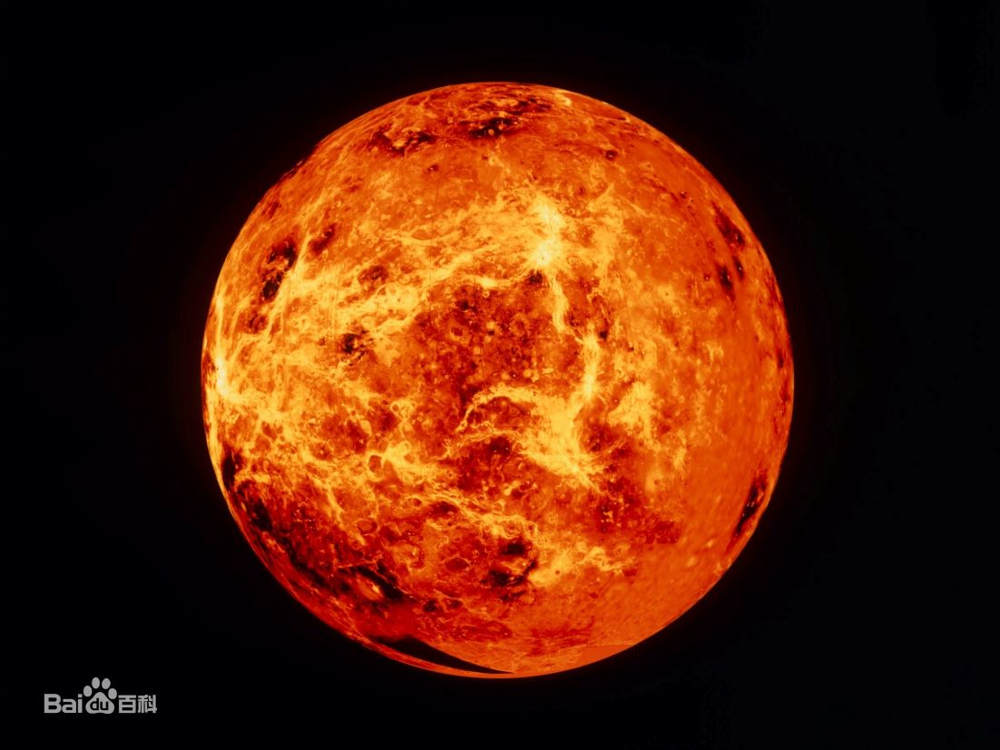

|  | 金星（英语、拉丁语：Venus，天文符号：♀），在太阳系的八大行星中，是从太阳向外的第二颗行星，轨道公转周期为224.7天，没有天然的卫星。金星在中国古代称为太白、明星或大嚣，早晨出现于东方称启明，晚上出现于西方称长庚。到西汉时期，《史记‧天官书》作者司马迁从实际观测发现太白为白色，与“五行”学说联系在一起，正式把它命名为金星。英文名称源自罗马神话的爱与美的女神维纳斯（Venus），古希腊人称为阿佛洛狄忒，也是希腊神话中爱与美的女神。金星的天文符号用维纳斯的梳妆镜来表示。 金星在夜空中的亮度仅次于月球，是第二亮的天体，视星等可以达到-4.7等，足以在地面照射出影子。由于金星是在地球内侧的内行星，它永远不会远离太阳运行：它的离日度最大值为47.8°。金星是一颗与地球相似的类地行星，常被称为地球的姊妹星。它有着太阳系四颗类地行星中最浓厚的大气层，其中超过96%都是二氧化碳，金星表面的大气压力是地球的92倍。其表面的平均温度高达735 K（462 °C），是太阳系中最热的行星，比最靠近太阳的水星还要热。 金星被一层高反射、不透明的硫酸云覆盖着，阻挡了来自太空中，可能抵达表面的可见光。它在过去可能拥有海洋，但是随着失控的温室效应导致温度上升而全部蒸发掉。水最有可能因为缺乏行星磁场而受到光致蜕变分解成氢和氧，而自由氢被太阳风吹散，逃逸到星际空间。2020年9月15日，科学家在金星大气层中侦测到磷化氢存在，这可能是地外生命存在的迹象。 |
返回 |